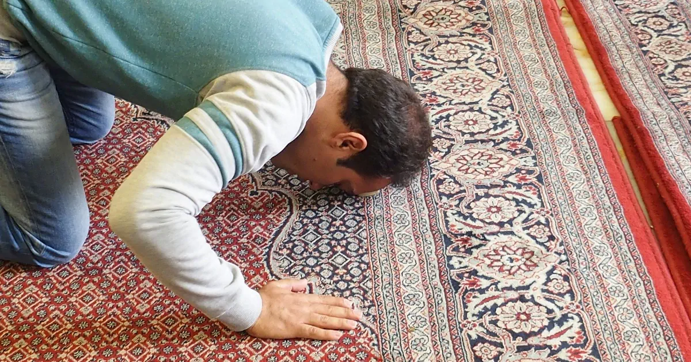

運営者情報
運営者
fleshblock
自己紹介

私たちのキリスト集会は30年という長きにわたり活動して参りました。結論から申し上げますと信徒数は伸びませんでした。
多くの信徒が離脱し創価学会へと流れる背景には現世利益（げんせりやく）という問題があります。キリスト教徒であるには死後の世界を信じ続けなければならないのです。日本人には霊的世界が理解できません。「天国は、ほんとうにある」だから天国ポイントを貯めようと口を酸っぱくしてゆっても無駄でした。
画像のムスリムを見てください。サラートで「アッラーのほかに神はなし、ムハンマドは神の使徒なり」と祈っています。サラートとはクルアーン29章45節で「あなたに啓示された啓典を読誦しなさい。そしてサラートの務めを守りなさい。本当にサラートは淫らな行為と悪行から遠ざける」と説明されています。そしてムスリムは一日5回のサラートが義務づけられています。どうしてこのような信仰を持てるのでしょうか。それは死後の復活と楽園の報償を信じているからです。
これまでの皆様からのご支援に心より感謝申し上げます。